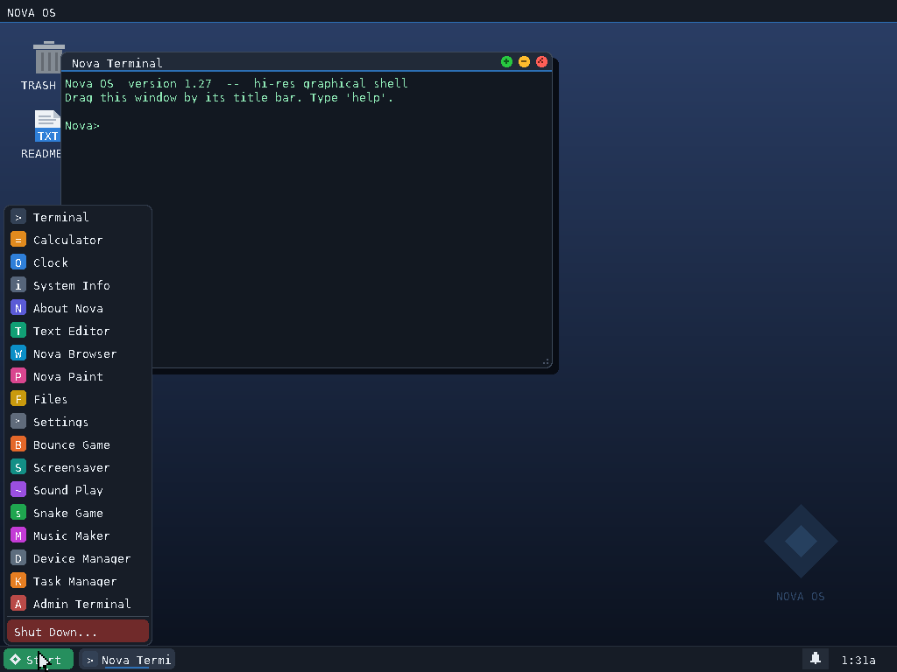
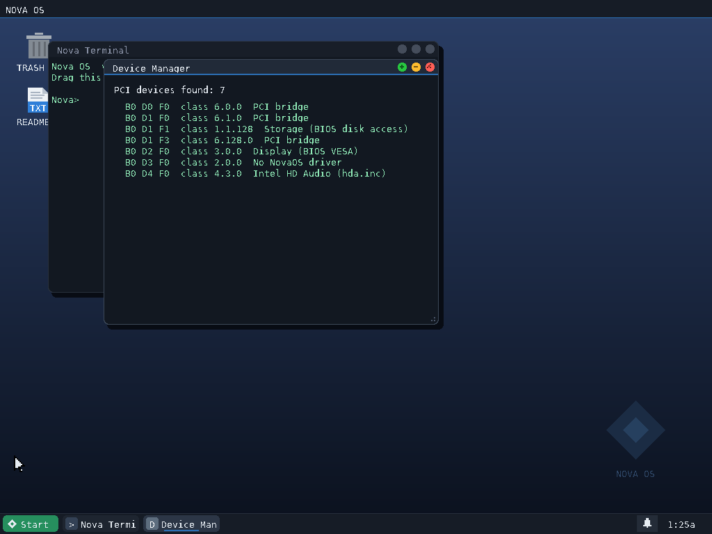
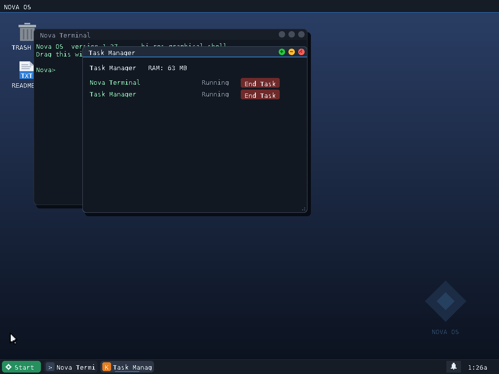

NovaOS is a bootloader, kernel, window manager, USB driver and sound driver, all hand-written in x86 assembly. No Linux underneath. No BSD underneath. Nothing borrowed — every sector it boots from was placed there on purpose.
Everything below runs without a single line of Linux, Windows, or BSD code underneath it. The window manager, the drivers, the sound engine — all original.
Taskbar, Start menu, draggable and resizable windows, right-click context menus — a full window manager written in raw assembly.
Walks the real PCI bus on your machine and lists what it finds — bridges, storage, display, sound — with live driver status.
See every running app and its memory footprint, end tasks on demand, same as you'd expect from any desktop OS.
A from-scratch Intel HD Audio driver plays the startup chime and effects through actual hardware, with a PC-speaker fallback when there's no HD Audio chip.
UHCI and OHCI controllers, USB HID keyboard and mouse — no external driver, no borrowed stack, written against the raw hardware spec.
A second, separate shell with its own command set — pcilist, sysdump — for looking under the hood.
Every build is tested in QEMU and on a real Toshiba Satellite M750 before it ships.



Grab NovaOS-1.27.img from the Releases page. It's a raw bootable disk image, not an ISO — that's the correct format for booting via BIOS.
Use Raspberry Pi Imager (“Use custom”), Rufus in DD Image mode, or balenaEtcher. This erases the stick, so use a spare one.
Restart the target PC and open its boot menu (often F12, F9, or Esc). Choose the USB stick. NovaOS's own Setup screen opens.
Run it live straight from the USB stick, or install it to a disk. Either way, you're looking at a desktop with no borrowed code beneath it.